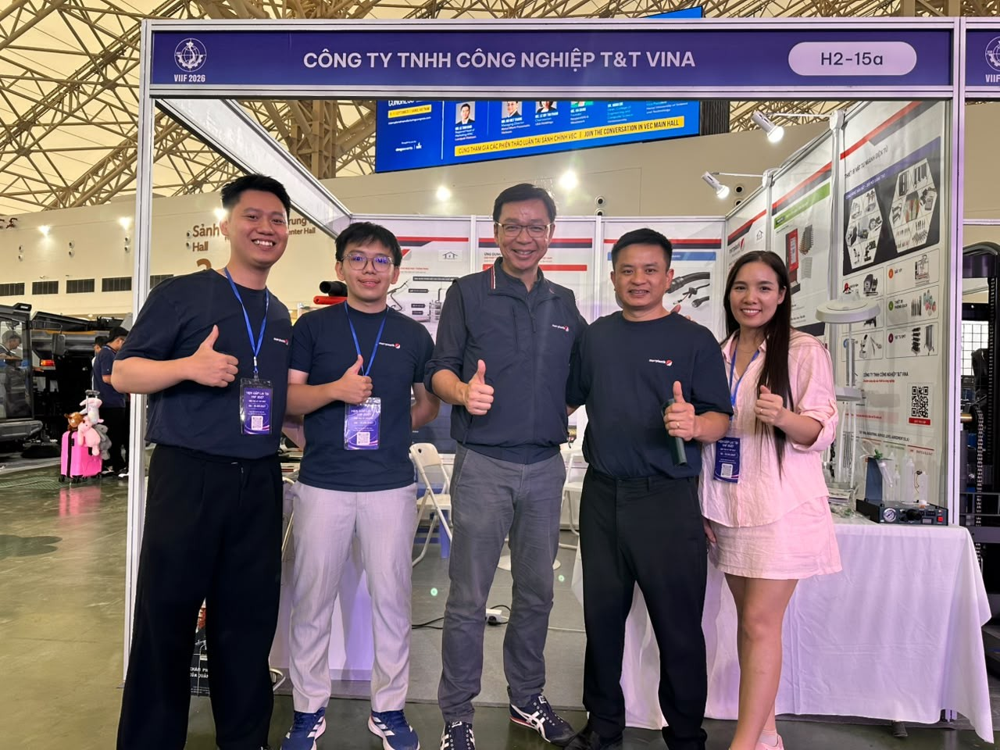
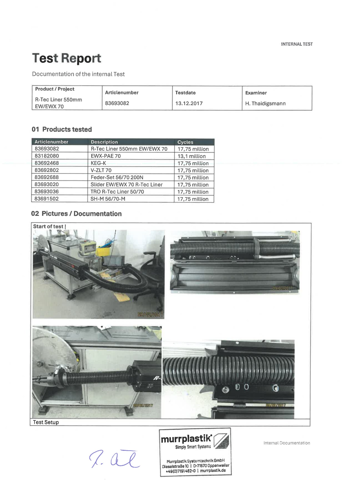
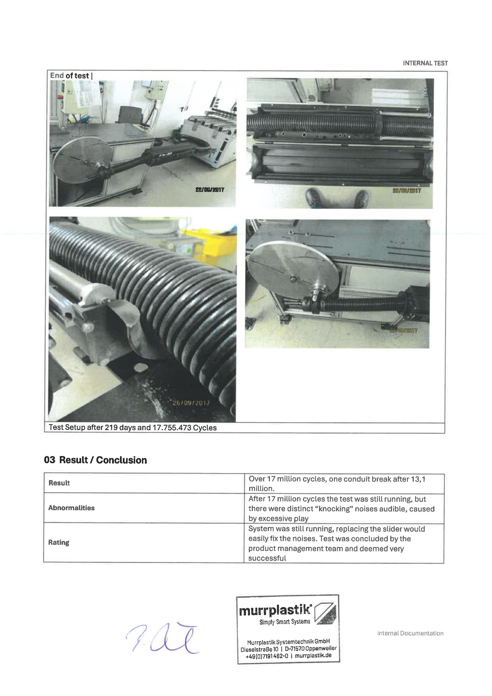
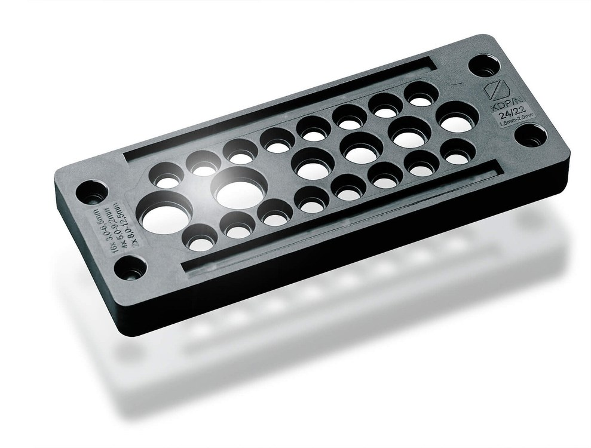

T&T Vina × Murrplastik: Ra Mắt 6 Hệ Sinh Thái Quản Lý Cáp Đột Phá Tại Triển Lãm VEC 2026
Trải nghiệm gian hàng 3D WebGL tương tác, máy khắc laser mp-LM 1M và hệ Dress Pack Robot từ Đức tại gian hàng H2-15a.
Xem chi tiết & 3D Booth →T&T Vina trích xuất dữ liệu từ hồ sơ kiểm nghiệm nội bộ chính thức (Internal Test Report) của Murrplastik Systemtechnik GmbH (Oppenweiler, CHLB Đức): Hệ thống dẫn hướng và thu hồi cáp robot R-Tec Liner 550mm EW/EWX 70 đã vượt qua 17,755,473 chu kỳ vận hành liên tục trong 219 ngày đêm trên dàn thử nghiệm robot mỏi, khẳng định độ tin cậy vượt bậc cho các ứng dụng công nghiệp nặng.
Trong môi trường sản xuất công nghiệp nặng như hàn điểm thân xe ô tô (Body Shop), dập kim loại hay đúc áp lực, cánh tay robot 6 trục liên tục chuyển động với gia tốc cực lớn và góc xoay phức tạp. Tuyến dây cáp nguồn hàn, cáp tín hiệu điều khiển servo và ống dẫn khí nén nếu không được dẫn hướng đúng cách sẽ nhanh chóng bị vặn xoắn, va đập vào thân máy, gây mài mòn và đứt ngầm bên trong.
Để chứng minh độ tin cậy cơ học của hệ thống thu hồi cáp tuyến tính R-Tec Liner 550mm (mã Art. 83693082), trung tâm thử nghiệm R&D của Murrplastik Systemtechnik GmbH tại Oppenweiler (Đức) đã lắp đặt hoàn chỉnh một bộ Dress Pack cỡ 70 (EW/EWX 70) lên dàn máy kiểm tra mỏi chu kỳ cao tự động hóa, bắt đầu vận hành liên tục từ ngày 09/02/2017 và kết thúc ngày 26/09/2017.
Dữ liệu trích xuất nguyên bản từ mục 01 Products tested trong hồ sơ kiểm định của Murrplastik:
| Mã linh kiện (SKU) | Tên linh kiện / Cấu phần thử nghiệm | Chu kỳ đạt được | Trạng thái kết thúc test |
|---|---|---|---|
| 83693082 | R-Tec Liner 550mm EW/EWX 70 (Hộp dẫn hướng hồi vị tuyến tính) | 17,75 million | Hoạt động bình thường |
| 83182080 | EWX-PAE 70 (Ống luồn ruột gà chịu uốn dẻo cao cấp) | 13,1 million | Đứt mỏi sau 13.1M chu kỳ |
| 83692468 | KEG-K (Khớp nối khớp cầu bảo vệ ống dẫn cáp) | 17,75 million | Hoàn hảo, không nứt vỡ |
| 83692802 | V-ZLT 70 (Bộ phận kết nối phân nhánh) | 17,75 million | Kết cấu nguyên vẹn |
| 83692688 | Feder-Set 56/70 200N (Bộ cụm lò xo kéo hồi vị lực 200N) | 17,75 million | Lực kéo ổn định, không gãy |
| 83693020 | Slider EW/EWX 70 R-Tec Liner (Con trượt dẫn hướng Teflon) | 17,75 million | Độ rơ nhẹ sau 17M chu kỳ |
| 83693036 | TRO R-Tec Liner 50/70 (Bộ vỏ bọc bảo vệ thanh dẫn hướng) | 17,75 million | Hoàn hảo, không biến dạng |
| 83691502 | SH-M 56/70-M (Đai kẹp gắn chặt vào cổ trục robot) | 17,75 million | Không lỏng ốc, giữ chắc |
Dưới đây là bản sao chụp 2 trang tài liệu kiểm định nội bộ chính thức lưu trữ tại CHLB Đức kèm chữ ký xác nhận của đại diện bộ phận Quản lý Sản phẩm (Product Management Team) Murrplastik:


Kết quả chung (Result): "Over 17 million cycles, one conduit break after 13,1 million." — Vượt mốc 17 triệu chu kỳ; trong đó ống luồn mềm EWX-PAE 70 chịu lực uốn gập liên tục đạt giới hạn mỏi và nứt sau 13.1 triệu chu kỳ, đây là mức độ bền kỷ lục đối với vật liệu Polyamide trong thử nghiệm động học.
Hiện tượng ghi nhận (Abnormalities): "After 17 million cycles the test was still running, but there were distinct 'knocking' noises audible, caused by excessive play." — Sau 17 triệu chu kỳ, toàn bộ hệ thống vẫn chạy ổn định nhưng xuất hiện tiếng gõ cơ khí nhỏ do con trượt (Slider) bị mài mòn sau thời gian dài ma sát cao.
Xếp loại chuyên môn (Rating): "System was still running, replacing the slider would easily fix the noises. Test was concluded by the product management team and deemed very successful." — Hệ thống vẫn vận hành bình thường. Việc thay thế con trượt định kỳ có thể xử lý triệt để tiếng ồn ngay lập tức. Thử nghiệm kết thúc thành công xuất sắc.
Một robot hàn điểm công nghiệp trong xưởng Body Shop (hàn thân xe ô tô) thường hoạt động trung bình khoảng 1.5 đến 2 triệu chu kỳ mỗi năm (chạy 3 ca liên tục 24/7). Như vậy, con số 17.75 triệu chu kỳ của hệ thống R-Tec Liner tương đương với 8 đến 10 năm vận hành liên tục mà kết cấu cơ khí hộp hồi vị và thanh dẫn hướng không xảy ra sự cố gãy vỡ nào.
Hiện nay, T&T Vina đã triển khai thực tế giải pháp Dress Pack và hộp bảo vệ R-Tec Box / R-Tec Liner của Murrplastik cho dàn cánh tay robot hàn ABB tại xưởng Body Shop thuộc Tổ hợp Nhà máy Sản xuất Ô tô VinFast Cát Hải (Hải Phòng). Giải pháp này giúp loại bỏ hoàn toàn sự cố quấn dây, giữ bán kính uốn cong Rmin cố định, bảo vệ an toàn cho các tuyến cáp quang, cáp Ethernet truyền thông công nghiệp và dây dòng hàn 10,000A.
Quý kỹ sư, quản lý bảo trì hoặc nhà tích hợp robot (System Integrator) cần nhận bản trích xuất hồ sơ kiểm nghiệm chi tiết, bản vẽ 3D STEP của hệ thống R-Tec Liner hoặc yêu cầu khảo sát đo đạc thực tế tại dây chuyền robot của nhà máy, xin vui lòng liên hệ trực tiếp phòng kỹ thuật T&T Vina.

Trải nghiệm gian hàng 3D WebGL tương tác, máy khắc laser mp-LM 1M và hệ Dress Pack Robot từ Đức tại gian hàng H2-15a.
Xem chi tiết & 3D Booth →Ứng dụng thực tế bộ thu hồi cáp R-Tec Box trên cánh tay robot hàn vỏ xe, dập kim loại tại các tập đoàn sản xuất xe hơi hàng đầu.
Khám phá giải pháp Ô tô →
Tấm dẫn cáp Inox V4A và ống luồn kháng hóa chất CIP áp lực cao IP69K, chống đọng thực phẩm và triệt tiêu nhiễm khuẩn chéo.
Tìm hiểu giải pháp →